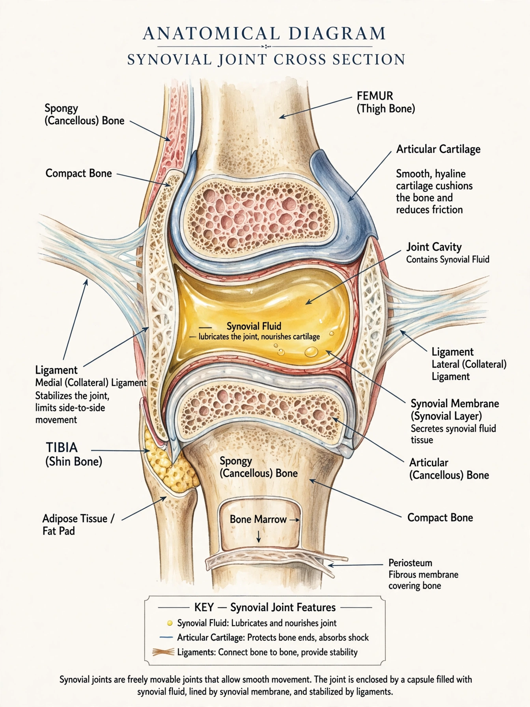

Synovial joint
From Wikipedia, the free encyclopedia
A synovial joint, also known as diarthrosis, joins bones with a fibrous joint capsule that is continuous with the periosteum of the joined bones, constitutes the outer boundary of a synovial cavity, and surrounds the bones' articulating surfaces. Synovial joints are the most common and most movable type of joint in the body.

synovial-joint-diagram.png
Structure
The distinguishing features of a synovial joint are:
- Articular cartilage — hyaline cartilage covering the articulating bone surfaces
- Joint (synovial) cavity — a fluid-filled space between the bones
- Synovial fluid — lubricates the joint and nourishes the cartilage
- Joint capsule — fibrous outer layer continuous with periosteum, lined by a synovial membrane
- Reinforcing ligaments — stabilise the joint
- Articular discs or menisci (in some joints, e.g. the knee)
Types
Synovial joints are classified by the shape of their articulating surfaces and the movements they allow:
- Ball-and-socket joint — e.g. the hip and shoulder
- Hinge joint — e.g. the elbow and knee
- Pivot joint — e.g. the joint between the first and second cervical vertebrae
- Condyloid (ellipsoid) joint — e.g. the wrist
- Saddle joint — e.g. the joint at the base of the thumb
- Gliding (plane) joint — e.g. the joints between the tarsal bones
Movements allowed
Synovial joints permit abduction and adduction, flexion and extension, rotation, and circumduction, depending on type.
Disorders
Disorders of synovial joints include osteoarthritis, rheumatoid arthritis, gout, and dislocation.
See also: Joint, Synovial membrane.